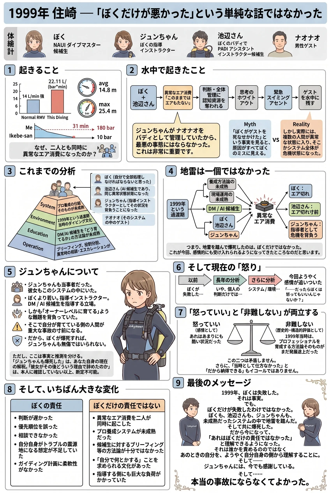

The road Orz passed by 2026 年 08 月
08 月 24 日 ( 日 )
Dive #207 もしかすると 1995 年の住崎の客観的分析に気持ちがやっと追いついたかも知れない
あまりにパーソナルなことなので SNS に書いて良いものか逡巡するんだけど、ぼくは馬鹿なので書いてしまう。そしてこれは SNS からの再編転記になる。
Dive #150 1999 年 3 月 21 日串本住崎でのぼく自身が関係する重大インシデントの解析スナップショット
これってぼく以外の人には糞の役にも立たない Web エントリーだけど、まだずっとしつこくも考えてきて、最近になってやっと、ダイブマスターコースをやっていたときの指導インストラクターたちに怒って良いって思えるようになった。
だめなのはぼくだけじゃなかったって。

そんな気がする。
でもジュンちゃんには今でも感謝している。彼女はあそこで唯一、ぼくにとって指導者だった。
そう思う。
ただここで注意しないといけないのは、ぼくの当時の指導インストラクターを非難したいわけじゃないし、そもそも非難するのは意味がない。それをやっちゃいけないってこと。
あのときは今のようにリーダーシップやインストラクターを育てるための方法論が未成熟だったという事実はあるから。
当時はまだ徒弟制度でアシスタントインストラクター、ダイブマスター、そしてインストラクターを育てるのが普通で、ぼちぼちコースとしてリーダーシップやインストラクターの養成が始まろうとしていた黎明期だったから。
だからと納得するわけではないけれど、当時の状況から仕方なかったとも言える。
ずっとこれまでなんで 1999 年の住崎で失敗して、それから潜れなくなってしまったのか分析を続けてきて、理屈の上では理解してた。理解してたけど、感情がそれを肯定したくなかった。自分だけが悪いって思い続ければ楽だから。
なんだかやっと分析に感情が追いついてきた気がする。
でもまぁ誰が悪いっていうのではなく、養成のための仕組みが未成熟で黎明期だったのが原因とやっぱり言えそう。
やっぱりそこに行き着くんだよな。
これが最後になるのかどうかやっぱりわからないけれど、現時点でのスナップショット。
1999/03/21 の住崎で本当にあれが事故にならなかったのはジュンちゃんのおかげだった。事故にならなくてよかった。
ぼく自身はインシデント状態だったけれど。
とりあえず、客観的事実に感情と言うか情緒と言うか、それが追いついた、と思う。
ここまで来るのに 27 年もかかっちゃった。
統合されたかどうかはわからないし、これまでの２７年間、ずっと自分を断罪してきたけれど、たぶんそれはもうやめて良いんじゃないかと思う。
だって事故になってないんだし。
もう自分で自分を裁き続けるのは、もういいでしょ。２７年も自分を責め続けてきたんだし。事故になってないのに。あぶなかったけど。
でもナオナオが巻き込まれなかったのは、やっぱりジュンちゃんのおかげだ。
だから今やっと、心からジュンちゃんにありがとうって言える。どこでどうしているのかわからないけれど。
- Category :
- #Records of Orz's Road
- #ダイビング
- #スクーバダイビング
- #1999/03/21
- #和歌山県
- #串本町
- #住崎
- #インシデント
- #エア切れ
- #ぼくの致命傷
- #潜れなくなったきっかけ